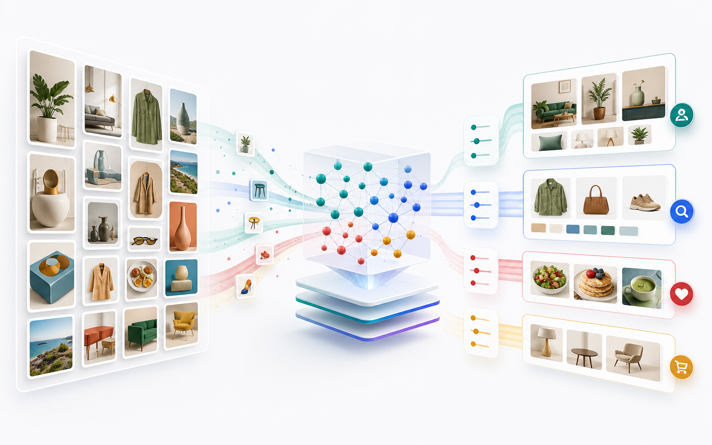
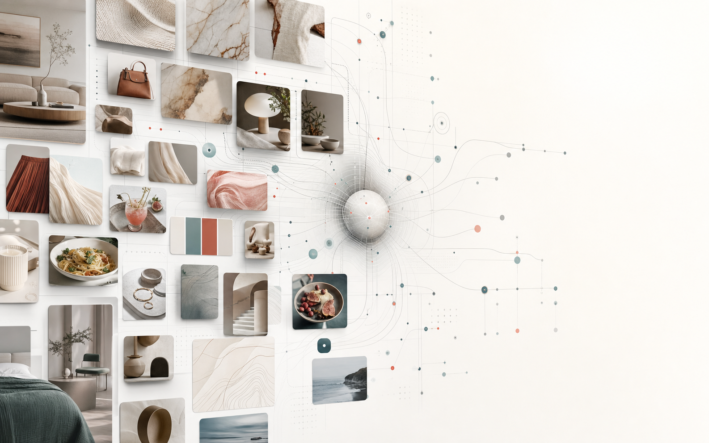
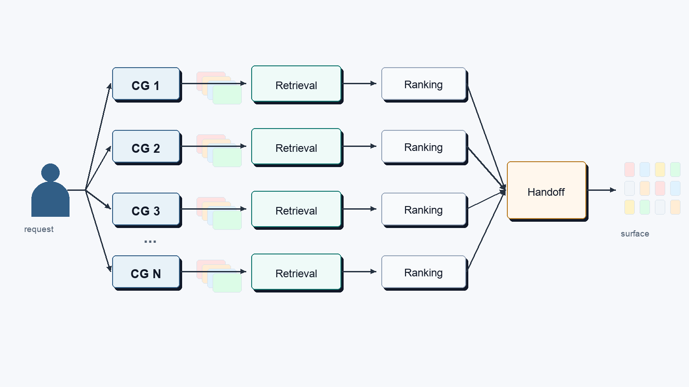
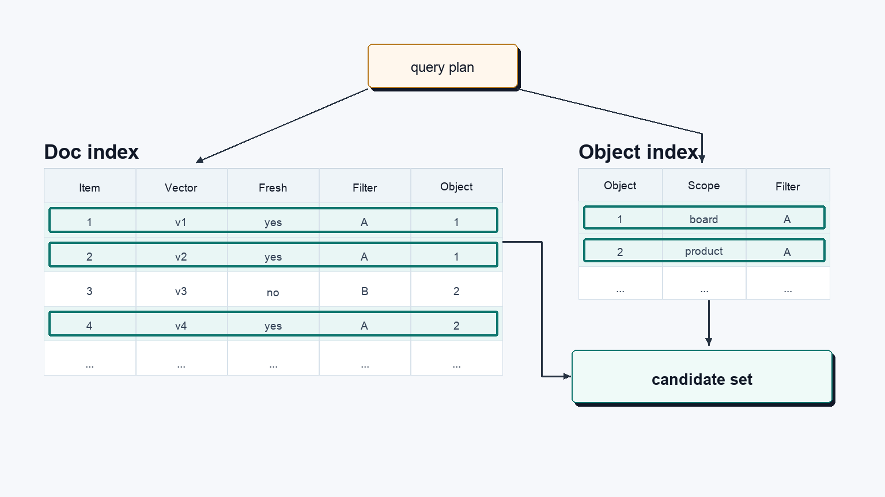
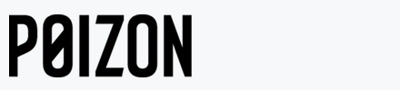

Serving paths need predictable latency across discovery, shopping, ads, and assistant surfaces.
Make Pinterest's Pin, board, and product retrieval a reusable AI infra boundary

At Pinterest scale, visual discovery and commerce depend on candidate sets that connect fresh Pins, boards, products, advertiser creative, query intent, and taste signals before rankers decide what to show. As Homefeed, related Pins, visual search, shopping, AI-powered ads, Ask Pinterest, and MCP workflows reuse more retrieval context, the vector layer becomes an AI infrastructure boundary: freshness, filters, latency, cost, and ownership need to be measurable in one place. A useful next step is to pressure-test one bounded retrieval workflow and compare whether the serving boundary makes the handoff into Pinterest's ranking systems clearer.

Scale Signals
Pinterest-scale retrieval needs explicit guarantees
631M users, 80B+ searches, 1.5B weekly saves, and graph-scale relationships create a retrieval problem before ranking begins: candidates need to be fresh, filtered, low-latency, and reusable across discovery, shopping, ads, and assistant workflows.
Search intent spans inspiration, product discovery, and commercial context before ranking takes over.
Saves create a fast-moving signal stream for taste, future intent, and freshness.
Graph context, embeddings, and metadata need lifecycle controls across retrieval systems.
At Pinterest scale, retrieval optimization is a total-cost question: reduce duplicated pipelines, wasted candidate generation, over-provisioned serving paths, and repeated engineering work across discovery, shopping, ads, and assistant surfaces.
Technical Perspective
Pinterest is turning discovery into action
Pinterest's business has been moving beyond a visual inspiration feed into a broader system for shopping decisions, advertiser performance, assistant-style workflows, and intent-rich media signals. Boards, search, visual discovery, shopping catalogs, Top of Search ads, Performance+ creative selection, Business Assistant, Pinterest MCP, Ask Pinterest, and tvScientific all point in the same direction: discovery is expected to become more actionable.
That shift changes the infrastructure problem. A user saving ideas for a room, a shopper comparing products, an advertiser evaluating creative, a partner copilot looking for campaign context, and an internal analytics workflow do not ask the same question. But they often need overlapping context: Pins, boards, products, ad creatives, campaign and keyword signals, query intent, taste patterns, documents, and metadata.
The next retrieval challenge is not simply finding visually similar items. It is serving the right context, with the right constraints, before each product surface applies its own ranking, policy, auction, or generation logic.
Platform Boundary
The retrieval-to-ranking handoff needs a clearer boundary
As AI workflows spread across discovery, shopping, ads, assistant context, and analytics, retrieval stops being a feature-specific implementation detail. The same work appears in different forms: candidate generation for Pins and products, contextual ads retrieval, campaign insight retrieval, table and documentation search, relevance evaluation, and embedding-based ranking research.
Some of that work should stay close to the product surface. Pinterest's rankers, business logic, safety rules, auction mechanics, and assistant experiences should remain central. The question is which responsibilities should be made explicit before that layer takes over.
The handoff before ranking should make the key guarantees explicit: candidate IDs, object type, retrieval score, metadata used for filtering, freshness state, model and index version, latency envelope, and fallback behavior. If those guarantees are different for every surface, each team debugs quality, latency, and freshness in its own way. If the handoff is consistent, product teams can focus on ranking and experience while the platform owns the retrieval mechanics that repeat.

- Candidate objects: Pins, boards, products, creative assets, query/session context, campaign signals, and internal knowledge objects.
- Serving guarantees: recall, filtered recall, p95/p99 latency, freshness, failure mode, and ranker handoff.
- Lifecycle controls: embedding refresh, index versioning, backfills, rollback, ownership, and observability.
Fresh, Filtered Retrieval
Freshness and filters are part of retrieval quality
For Pinterest, freshness is not one update path. A new Pin, product availability change, price update, local inventory signal, advertiser constraint, creative asset, policy change, or trend shift can all affect which candidates should be available. Some updates arrive through streaming paths, some through batch jobs, some through embedding refresh, and some through model or metadata changes.
That makes filtered retrieval an architecture issue, not a downstream cleanup step. Shopping and ads workflows need vector similarity to work with merchant, category, price, locale, policy, safety, advertiser eligibility, campaign context, creative format, and recency. If those constraints are applied only after vector search, the system can over-fetch, lose recall, or make latency less predictable.

Filtered recall should be measured directly, because the business constraints are part of relevance. A retrieval layer that cannot explain how filters affected the candidate set is difficult for rankers, product teams, and platform owners to trust.
The same issue shows up in online and offline consistency. Offline systems may produce embeddings, model upgrades, relevance labels, quality signals, metadata enrichment, and backfills. Online services need those improvements in a low-latency serving path. The challenge is keeping that path consistent without every surface maintaining its own glue code between streaming, batch, embedding generation, index refresh, and serving.
Architecture Path
Start with one workflow, not a platform migration
The next architecture step does not need to be a broad platform migration or a replacement conversation. It should start with one workflow where retrieval quality, freshness, filters, latency, and ownership are measurable. Good candidates include Pin/product retrieval, visual search candidate generation, ads creative or product retrieval, assistant context, or analytics and documentation retrieval.
For that workflow, define the candidate objects, embedding types, metadata filters, freshness path, update cadence, ranker or application handoff, p95/p99 latency target, filtered-recall benchmark, index lifecycle, rollback path, cost model, and ownership boundary. Then ask a narrow question: does the retrieval layer reduce product-specific glue code, make filtered recall more predictable, and create a cleaner path from offline improvements back into online serving?
If Zilliz fits, it is at this boundary: a dedicated vector layer for workloads that need high-throughput ANN, hybrid vector and metadata filtering, multi-vector schemas, faster backfills, index lifecycle control, and observable handoff into ranking or application logic. The potential gain is not more vector search for its own sake. It is clearer retrieval ownership, more predictable serving behavior, and less duplicated infrastructure across product surfaces.
Architecture fit
Fit retrieval into the data and AI platform
If embeddings and metadata already move through streaming updates, Spark jobs, Iceberg/S3 tables, Kubernetes-based compute, and AI platform workflows, the vector layer has to consume fresh signals, serve filtered vector search, expose observable handoff guarantees to rankers, and avoid becoming another isolated stateful system.
Stack-aware retrieval path
Data-plane fitData plane
CDC / Kafka / Flink
Spark / Iceberg / S3
Kubernetes / EKS
Retrieval layer
Model + embedding refresh
Vector retrieval boundary
Hybrid vector + scalar filters
Product surfaces
Homefeed / related Pins
Visual search / shopping
Ads / Ask Pinterest / MCP
Evaluation
Recall and relevance
p95/p99 latency and freshness
Cost and platform ownership
What We Can Pressure-Test
Define the retrieval slice before discussing technology
Start with one workflow, then define the candidate objects, embedding types, filter requirements, freshness path, latency target, benchmark method, stack integration points, and ownership handoff.
Objects
Candidate objects and embeddings
Identify which Pins, boards, products, creative assets, query/session signals, user-taste context, tool metadata, or assistant resources need vector representation.
Freshness
Filter and freshness path
Define which category, merchant, locale, inventory, price, safety, policy, advertiser, availability, and freshness constraints must happen during retrieval.
Benchmark
Benchmark and ranking handoff
Pressure-test recall, relevance, p95/p99 latency, filter selectivity, update freshness, cost, observability, failure behavior, and the handoff to ranking.
Cost Modeling
Estimate retrieval cost before expanding the surface
Latency and relevance matter, but platform teams also need to understand what happens to cost as entity count, vector dimension, storage, query capacity, metadata filtering, and freshness requirements grow across discovery, shopping, ads, and assistant retrieval paths. This preview points to the live Zilliz calculator for current pricing.
Cloud Provider
Amazon Web Services
Region
us-west-2 (Oregon)
Pricing Plan
Standard
Cluster Type
Capacity-optimized
Preview only. Use the live calculator for the latest pricing by cloud, region, cluster type, storage, and query capacity.
Example estimated monthly cost
$126.10
Validate cost with free credits
Model one retrieval workflow, then compare the estimate against observed latency, QPS, storage, and freshness requirements.
1 Query CU$126.00
4.05 GB Storage$0.10
Similar Production Patterns
How adjacent teams handle visual and commerce retrieval at scale
These customer stories show adjacent patterns around large catalogs, visual search, AI shopping, low-latency retrieval, fresh indexing, and simpler retrieval operations. They are not Pinterest comparisons; they are production patterns to pressure-test.
leboncoin
Visual commerce
Modernized product recommendations with visual search
Leboncoin used Zilliz Cloud to support Find Similar Items and reverse image search across a large re-commerce marketplace.
80M active ads
Sub-200ms target
Visual search MVP
"speed and scale we needed to power visual search"Yann Lemonnier, ML Engineer at Adevinta
Read the leboncoin story
123RF
Image search
Scaled visual search across a massive image library
123RF uses Zilliz Cloud for text-to-image and reverse image search, with daily embedding ingestion and production latency improvements.
200M+ vectors
<50ms latency
50% cost savings
"search will scale with our business instead of holding it back"Su-Meng Yong, Engineering Team Lead at 123RF
Read the 123RF story

Poizon
AI shopping
Runs latency-critical AI shopping workloads at billion scale
Poizon uses Zilliz Cloud for performance-critical visual search and AI authentication paths while keeping other workloads cost-optimized.
Billion-scale search
Sub-90ms response
3-cluster complexity removed
Read the Poizon story
Production Signals
Zilliz performance proof at production scale
Zilliz has supported production retrieval workloads with measurable results across latency, QPS, vector scale, indexing freshness, cost reduction, and operational simplicity. These numbers provide evaluation anchors for a Pinterest workflow where retrieval must serve product surfaces before ranking without making platform ownership heavier.
<20ms response at 5K QPS
Support low-latency multimodal search and recommendation serving when traffic spikes, entity counts grow, and freshness cannot be separated from serving.
<20ms response
5K QPS
50M+ entities
200M+ vectors, <50ms latency, 50% lower cost
Run visual and text-to-image retrieval across large media catalogs while improving latency and reducing production retrieval cost.
200M+ vectors
<50ms latency
50% cost savings
Millions indexed within hours, search stays online
Use bulk import and recurring embedding ingestion patterns to keep fast-changing catalogs fresh while live search paths stay online.
Millions indexed in hours
Daily embedding ingestion
Search stays online
3-5x cost reduction and sub-90ms response
Reduce infrastructure spend and simplify serving paths while keeping latency measurable for performance-critical retrieval workloads.
3-5x cost reduction
3-cluster complexity removed
Sub-90ms response
What we can review together
Bring one retrieval workflow
The meeting works best with one concrete surface where candidate quality, freshness, filtering, latency, cost, and ownership all matter: Homefeed, related Pins, visual search, shopping, ads retrieval, or assistant retrieval context.
- ✓Which candidate objects belong in the first evaluation: Pins, boards, products, advertiser creative, query/session context, or assistant knowledge.
- ✓How to model collections, partitions, metadata filters, multi-vector schemas, and access boundaries for that workflow.
- ✓How to keep embeddings, catalog metadata, model versions, index versions, and evaluation loops fresh enough for product use.
- ✓How to benchmark recall, latency, filtering quality, operating cost, stack integration, and the handoff between retrieval and ranking systems.
Review one Pinterest retrieval workflow with Zilliz
Bring one workflow. We will map candidate objects, metadata filters, freshness path, stack fit, benchmark plan, and the retrieval handoff before ranking.